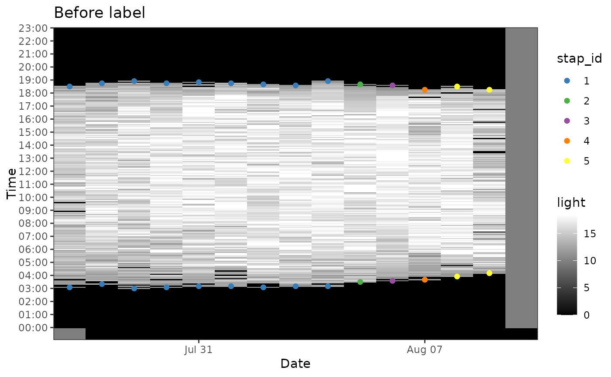
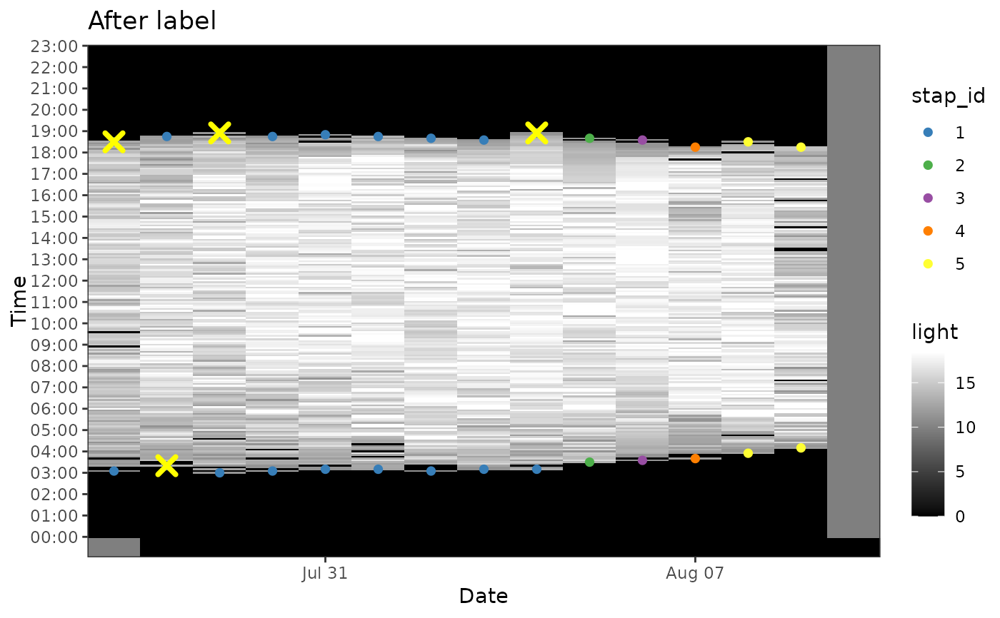

This function read an exported csv file from TRAINSET https://trainset.raphaelnussbaumer.com/
and update the twilight data tag$twilight.
Usage
twilight_label_read(
tag,
file = glue::glue("./data/twilight-label/{tag$param$id}-labeled.csv")
)See also
Other geolight:
geolight_map(),
twilight_create(),
twilight_label_write()
Examples
owd <- setwd(system.file("extdata", package = "GeoPressureR"))
tag <- tag_create("18LX", quiet = TRUE) |>
tag_label(quiet = TRUE) |>
twilight_create()
tag_labelled <- twilight_label_read(tag)
setwd(owd)
plot(tag, type = "twilight") + ggplot2::ggtitle("Before label")

str(tag_labelled$twilight)
#> 'data.frame': 28 obs. of 4 variables:
#> $ twilight: POSIXct, format: "2017-07-27 03:05:00" "2017-07-27 18:30:00" ...
#> $ rise : logi TRUE FALSE TRUE FALSE TRUE FALSE ...
#> $ stap_id : num 1 1 1 1 1 1 1 1 1 1 ...
#> $ label : chr "1" "discard" "discard" "1" ...
plot(tag_labelled, type = "twilight") + ggplot2::ggtitle("After label")
